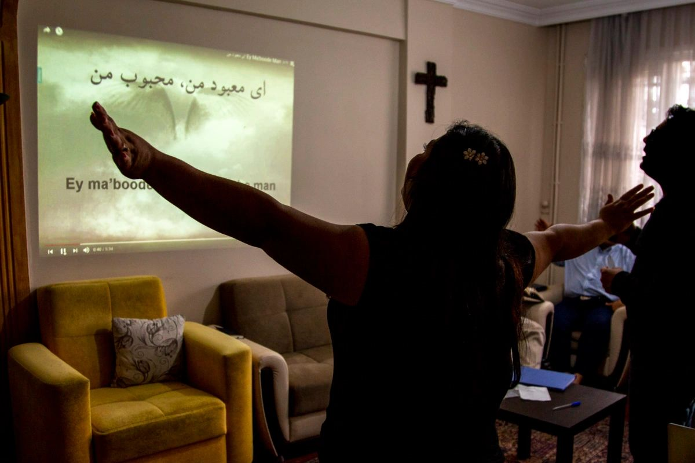

我们的故事
当外国传教士不得不离开受限制地区时，工作并没有停下。本国牧者和本地同工本来就在那里。这一页讲的就是这段故事。

我们是谁
本地基督徒同工和牧者，在信仰艰难甚至危险的地方忠心服事。他们最熟悉自己的语言、文化和群体。
New Asian Pathways 存在，是为了在旁边支持这些本国同工——不是派外来队伍接手，也不是另起炉灶。
为什么这件事重要
几十年来，传统宣教很大程度依靠向中国等地差派外国传教士。后来政治环境改变，管制加严，安全风险升高，几乎所有外国传教士都不得不离开。
风险太高，传统机构往往无法再把人派回去。但本地同工没有离开。他们仍在忠心接续一代代传下来的工作。
在外来同工进不去的地方，NAP 直接与已经在当地的信徒同工。我们不把外来人员再送进会危及他们的环境；我们支持那些已经在那里、能够安全而有果效做工的本地同工。
我们的方式
外国传教士离开时，留下的不是空白。工作交给了最能承担的本地同工。
本地伙伴承担起事工，使几十年的福音工作在自己的群体里继续。
我们不重新开始，也不取代留下的工作。NAP 作为支持伙伴，站在本国同工身边。
装备受托的本国同工，而不是依赖外来人员长期驻留，工作才能灵活，也能自己继续下去。
NAP 的不同
本地同工比我们更早就在做这工。我们来坚固、支持已经在发生的事，而不是接手。
本国同工不只是维持事工。他们兴起新人，并向亚洲和世界差派自己的队伍。
同伴关系建立在委身、信任和共同的呼召上，不是一次性的交易。
我们的呼召
希伯来书 12:1–2